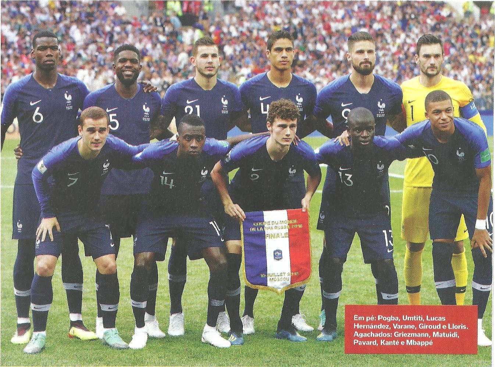

A Seleção Francesa Já participou de 15 edições da Copa do Mundo de futebol em 2022 fará a sua 16°.
A Seleção Francesa foi campeã do mundo em 1998 e em 2018; vice-campeã em 2006; e terceiro lugar em 1958 e 1986.
| Data/Hora | Estádio | Adversário |
|---|---|---|
| 22 nov 2022 / 16h00 | Estádio Al Janoub | Austrália |
| 26 nov 2022 / 13h00 | Estádio 974(Estádio Ras Abu Aboud) | Dinamarca |
| 30 nov 2022 / 12h00 | Estádio da Cidade da Educação | Tunísia |